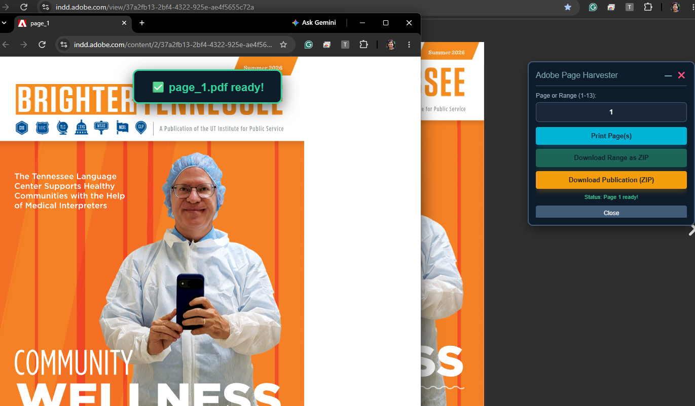
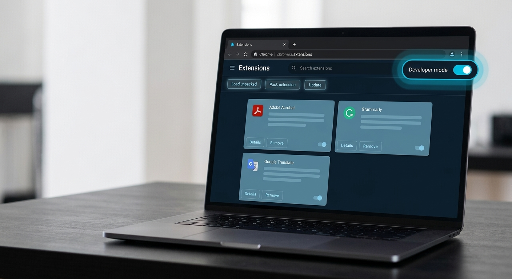

The TGN Productivity Suite includes specialized document and page extraction tools—such as the Adobe Page Harvester, Issuu, Calaméo, Yumpu, Zinio, and FlipHTML5 extractors. These tools are designed to streamline digital publication management, allowing you to preview, print, or batch-download publication pages and assets directly from your browser.
When you navigate to a supported publication viewer and activate an extractor, an interactive control panel automatically opens on your screen. This floating panel tracks loaded assets in real-time, provides quick preview thumbnails, and lets you manage individual page printing or complete ZIP packages effortlessly.

Follow these quick steps to install the Proofs_Page_Harvester browser extension on Chromium-based browsers (Google Chrome, Microsoft Edge, Brave, etc.).
Obtain the Proofs_Page_Harvester.zip file from the path below:
/tgn-proof-pages/2026/2026_PROOFTEMPLATES/05_TOOLS/01_BrowserExtensions
Open your browser and navigate to the extension management page by entering the URL below into your address bar:
chrome://extensionsedge://extensionsbrave://extensionsToggle the Developer mode switch located at the top-right corner of the Extensions page to ON.

Drag the Proofs_Page_Harvester.zip file directly from your file manager and drop it anywhere onto the Extensions browser page to complete the installation.